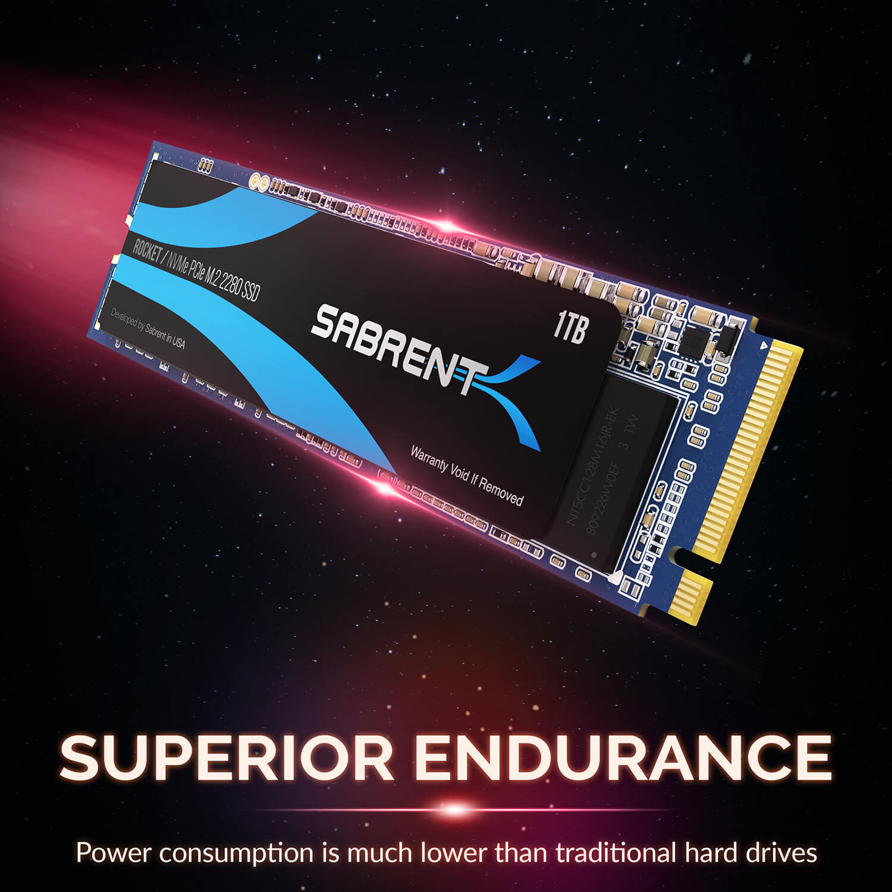
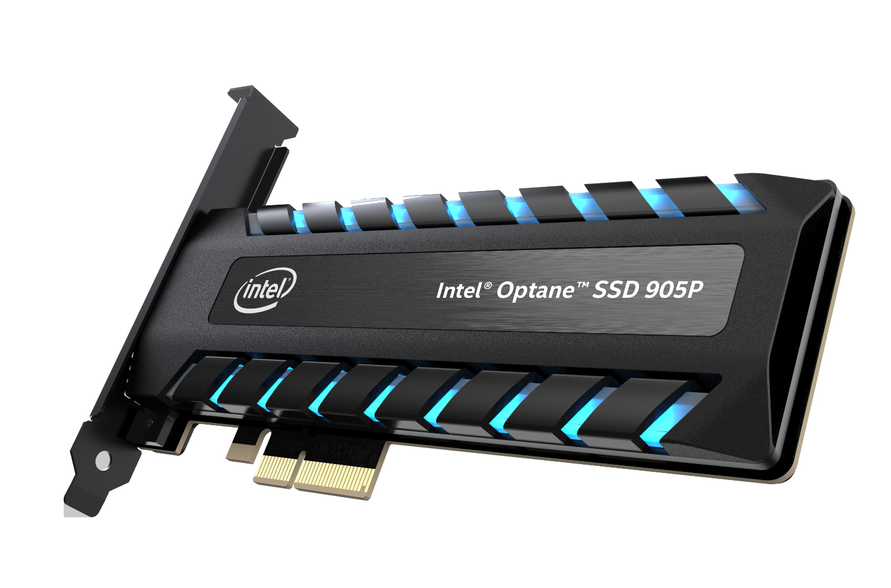

The storage holds almost all files and information on the computer. There are 3 main types of storage: HDD, SATA, and PCIe. HDD, being a hard disk drive, can hold large amounts of data but are slower than the other two types. Both SATA (Serial AT Attachment) and PCIe are SSDs (solid state drive). These types of drives store information differently, and usually more efficiently. SATA is connected to the motherboard with a SATA data cable and to the power supply with a SATA power cable. SATA data provides a way for the motherboard to communicate with the SSD, while the SATA power provides direct power. PCIe, on the other hand, is connected directly to the motherboard, whether that be through an M.2 slot or on an expansion slot. Both of these are a type of PCIe connection, though they are usually on different places on the motherboard. Because the PCIe SSDs are directly connected to the motherboard with high speed lanes, they can get faster speeds than an HDD or an SSD.
